Han
Han 在研究生一年级下学期第一次走进北航头马。起初他以为这只是个普通的英语角，直到看见大家在台上侃侃而谈，才意识到这是一个能真正提升自己的地方。最打动他的，是俱乐部里不论水平高低、人人都愿意给出中肯建议的热情氛围，以及成员之间真诚的友谊——这让他迫不及待地想融入这个大家庭，并很快下定决心加入。
2015 年秋天，Han 在第 114 次会议上完成破冰演讲《Who am I》，从哲学三问出发讲述自我。那一次他还很紧张，演讲时不停作捶胸状，点评官 Jane 善意地提醒他注意肢体语言。但他成长得很快：两周后的 CC2《Be a real one》，他已能双手插兜、在台上从容自若，主题是抛开伪装、怀着真诚友善的心做真实的自己；接着是中文 CC3《不着急》，借跳高运动员的故事讲述在快节奏时代里安静、淡定、不浮躁的力量，被小编形容为"有一种叫平静的东西正抚平着我们躁动的心"；再到 2016 年的 CC4《What sports have taught me》，分享运动教会他的永不言弃、注意细节与平衡生活。
除了备稿演讲，Han 是俱乐部里非常活跃的一员。他多次担任会议主持（Toastmaster）和即兴演讲主持（TTM），为 Self-evaluation、Begin Again、April Fool、Right or Wrong 等主题精心设计问题；也做过备稿演讲的点评官。在即兴环节里他思路收敛、稳健内敛，被昵称"han 学长"。他性格沉稳、像个学霸，又不失温度，是那种台下踏实、台上越来越自信的成长型头马人。
闯关之路 · Competent Communication
做过的演讲 · 4 场
担任过的职责
里程碑
- 2015-10-16 破冰首秀 CC1《Who am I》第114次会议完成破冰演讲，正式开启头马之路。
- 2015-10-26 新会员专访在'K记者有约'接受采访，讲述研一下学期慕名加入、被俱乐部热情氛围打动的经历。
- 2015-11-20 首次中文演讲 CC3《不着急》第119次会议，演讲风格转向沉静内敛，传递平静的力量。
- 2015-12-11 首次担任会议主持TM第122次会议 Self-evaluation 主题主持。
- 2016-03-18 CC4《What sports have taught me》第128次会议，分享运动的人生启示。
为俱乐部做的事
- 多次担任会议主持(Toastmaster)，为 Self-evaluation、April Fool 等主题主持全场。
- 多次担任即兴演讲主持(TTM)，精心设计贴合主题的即兴问题，被称赞'handsome and brilliant'。
- 担任备稿演讲点评官，给新会员中肯的反馈。
- 作为即兴环节的活跃常客，持续带动会议气氛。
- 用 CC1-CC4 的演讲传递真诚、平静、永不言弃等正向价值。
头马里的人
照片墙 · 时间线
 ✓
✓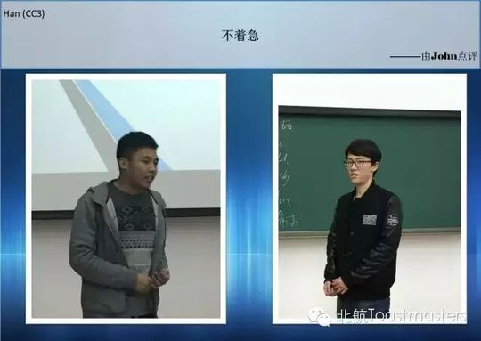
✓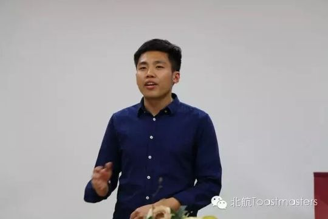
✓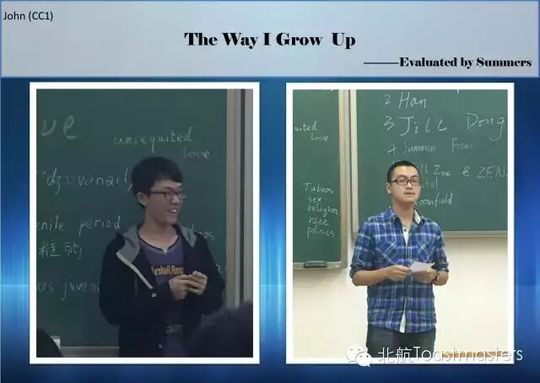


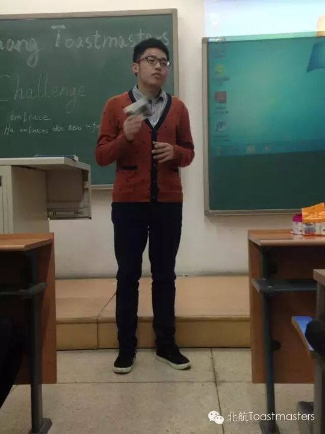
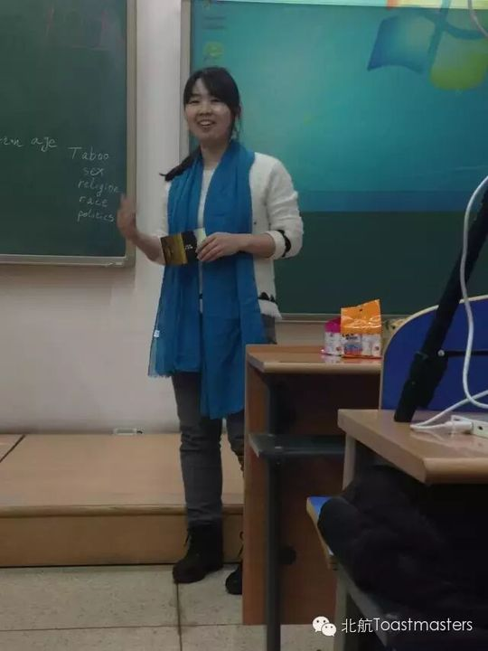
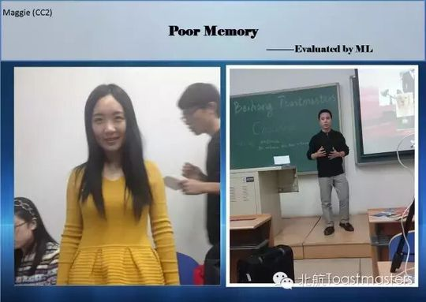


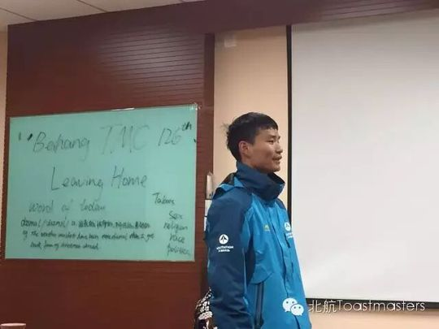
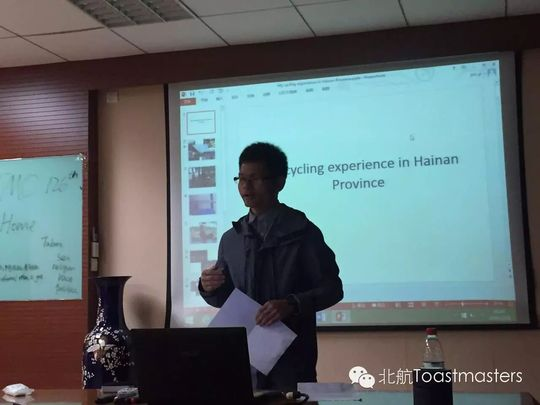


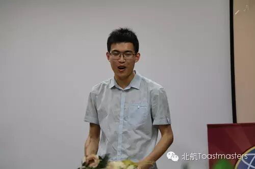
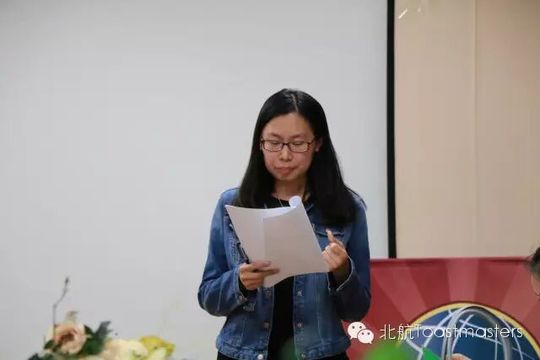
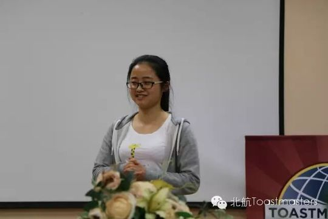
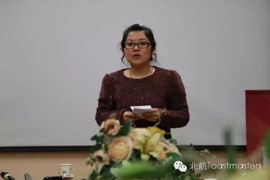
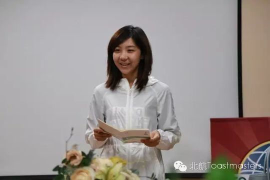
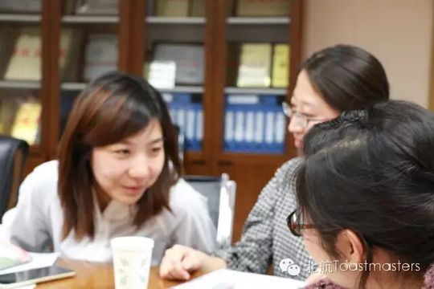
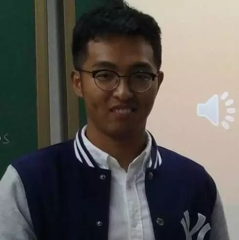

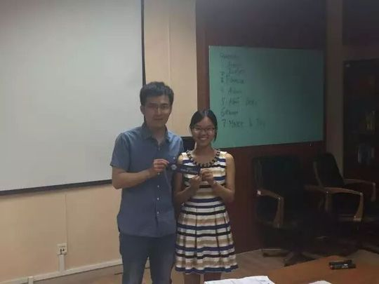